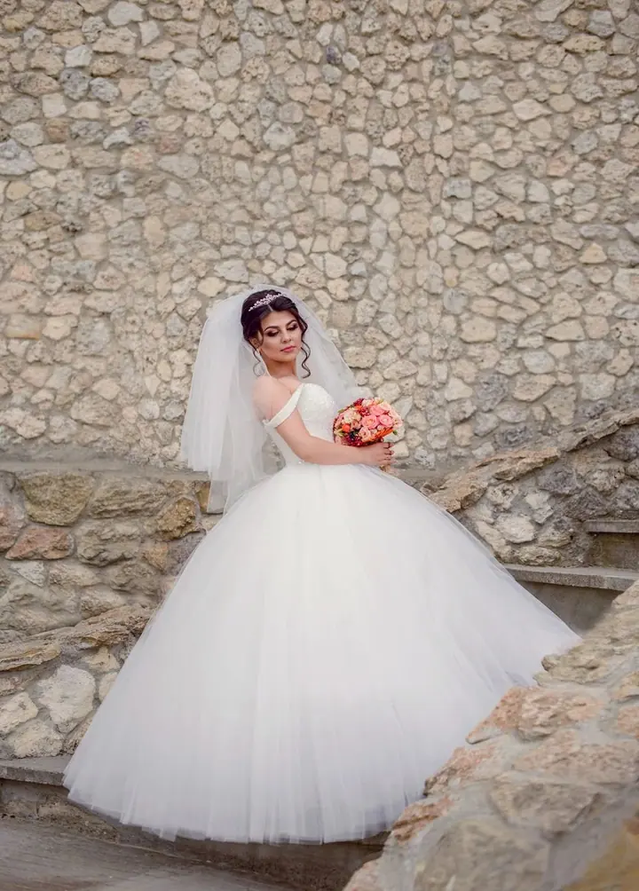
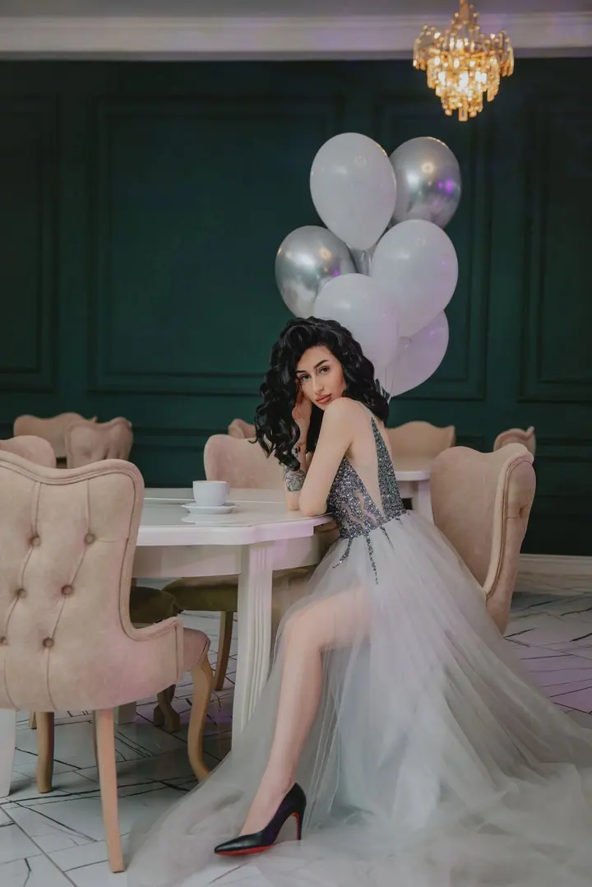
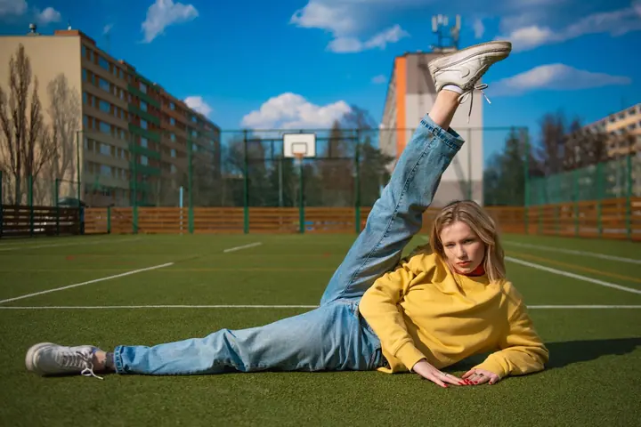

Portréty a focení v šatech
Portrétní focení v ateliéru i venku, třeba v Havlíčkových sadech. Šaty si můžete půjčit z mé nabídky a k balíčku Premium patří i profesionální líčení a účes.




Jmenuji se Anastasia Haritonova, ale všichni mi říkají Nastya. V Praze fotím portréty a focení v šatech, těhotenské a rodinné focení i svatby. Nejvíc mě na tom baví práce s lidmi, přirozené emoce a krásné světlo.
Více o mně
„Věřím, že každý člověk má v sobě něco krásného, někdy to jen stačí správně zachytit.“
— Anastasia Haritonova
Portrétní focení v ateliéru i venku, třeba v Havlíčkových sadech. Šaty si můžete půjčit z mé nabídky a k balíčku Premium patří i profesionální líčení a účes.
Jemné těhotenské focení plné něžnosti a ženskosti, pro maminku samotnou, ve dvou i s celou rodinou. Ráda fotím v šatech a s látkou.
První momentky s miminkem, focení k prvním narozeninám s cake smash nebo rodinné vánoční focení. V ateliéru i venku.
Od dvouhodinového balíčku s obřadem a portréty novomanželů až po celý den od příprav po reportáž. Ke každému balíčku nabízím předsvatební schůzku.
Fotografie jsou ilustrační
Pocházím z Moldavska a fotografování je součástí mého života už víc než 10 let. Za tu dobu se změnil můj styl, technika i pohled na fotografii, ale jedno zůstalo stejné: nejvíc mě baví práce s lidmi.
Mám ráda přirozené emoce, krásné světlo a fotografie s atmosférou. Věřím, že každý člověk má v sobě něco krásného. Na focení si můžete půjčit šaty z mé nabídky a já vám pomůžu se vším od začátku až po finální úpravu fotek.
Je pro mě důležité, abyste se před objektivem cítili přirozeně a v pohodě, bez zbytečného napětí. A pokud jste nervózní nebo jste se ještě nikdy nefotili, nevadí. Společně to zvládneme.
Rezervace i domluva probíhají písemně přes Instagram, Facebook, WhatsApp nebo e-mail. Do zprávy prosím uveďte typ focení, termín, který se vám hodí, a případně vybraný balíček.
Termín vám držím po zaplacení rezervačního poplatku 500 Kč, který se pak odečte z ceny focení. U svateb je záloha 1000 Kč.
Vyberete si šaty z mé nabídky, a když si nebudete vědět rady, s pózami vám pomůžu. Na převlečení počítám s časem navíc, takže nemusíte nikam spěchat.
Fotky pro vás pečlivě upravím. Počet upravených fotek závisí na vybraném balíčku, u svateb dostanete navíc i všechny povedené snímky bez úprav.
Určitě. Spousta mých klientek přichází bez zkušeností a často i nervózní. Celým focením vás provedu a pomůžu vám s pózami, abyste se mohla uvolnit a být sama sebou.
Ano. V balíčku Standard je zapůjčení 1–2 šatů, v balíčku Comfort až 3 a v balíčku Premium až 5 šatů, k tomu profesionální líčení a účes.
Napište mi, telefonické rezervace nepřijímám. Termín potvrdí rezervační poplatek 500 Kč, který se odečte z ceny. Změnit ho můžete jednou, nejpozději 48 hodin před focením.
Podle balíčku. U balíčku MINI do 3 týdnů, u CLASSIC I do 4 týdnů a u PREMIUM do 8 týdnů, a to přes odkaz na úložiště, u balíčku Premium i na flash disku. Před svatbou se rády potkáme na předsvatební schůzce.